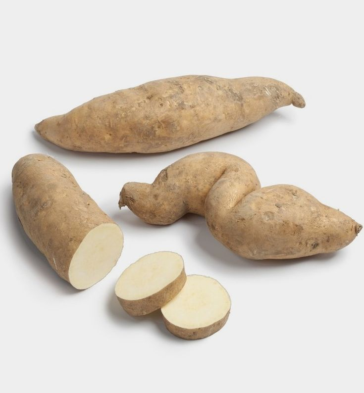
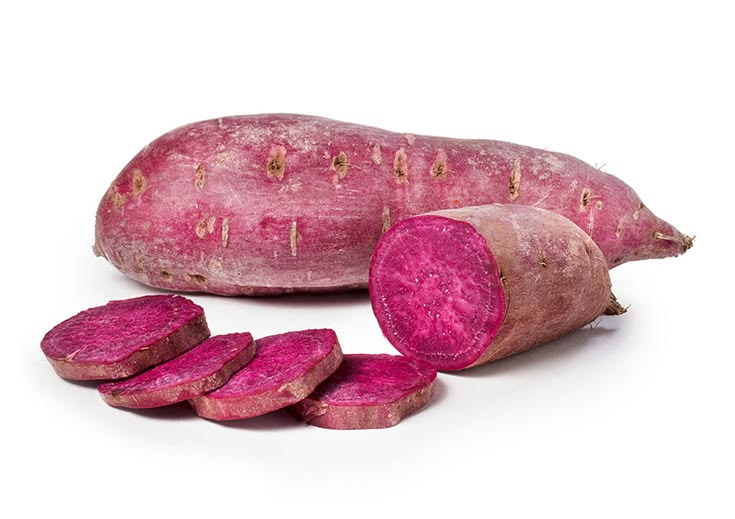
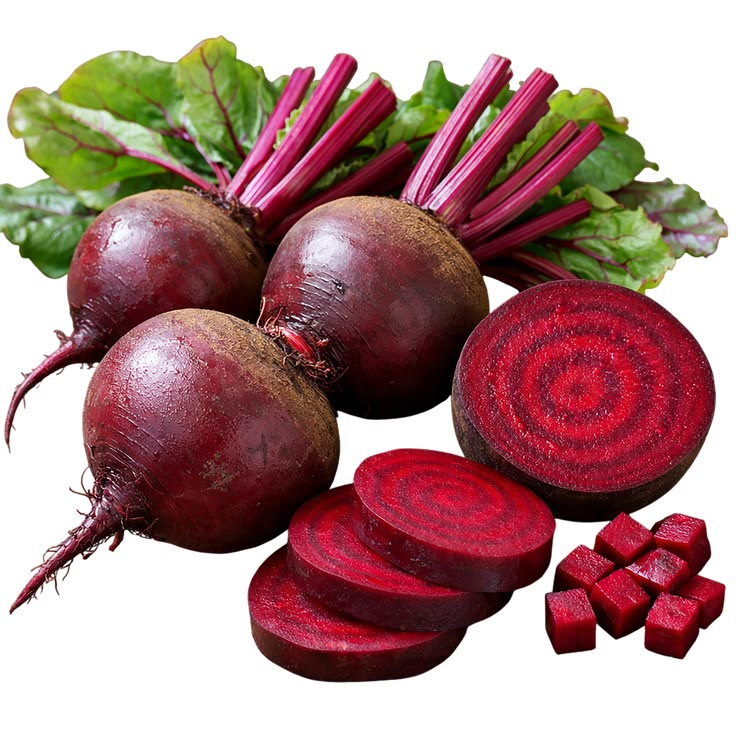
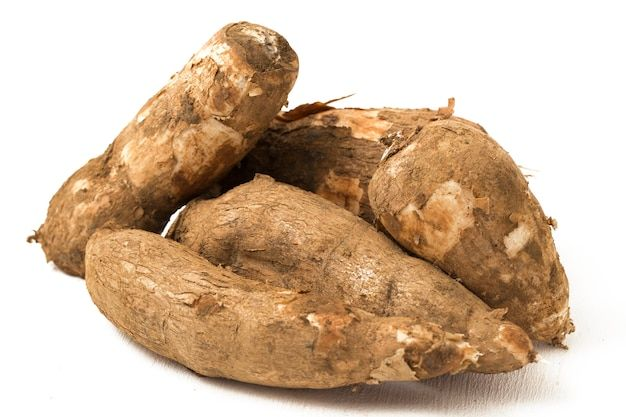

German 2 Sweet Potato
Our farm-fresh German 2 Sweet Potatoes are hearty, naturally sweet, and packed with nutrition. With their smooth texture and rich flavor, they’re perfect for boiling, roasting, baking, or blending into wholesome stews and soups. Rich in fiber, vitamin C, and beta-carotene, they help support healthy digestion, immunity, and eye health. Low in calories yet satisfying, these sweet potatoes are a smart choice for balanced meals. Their natural sweetness makes them versatile for both traditional and modern recipes, adding nourishment and flavor to every dish. Harvested with care, we deliver them fresh from our fields to your kitchen, ensuring maximum taste, nutrition, and quality in every bite.

Chingovha Sweet Potato
Our farm-fresh Chingovha Sweet Potatoes are traditional, nutrient-rich, and naturally sweet. With their firm texture and earthy flavor, they’re perfect for boiling, roasting, or enjoying in hearty stews and local dishes. Packed with fiber, vitamin C, and essential minerals like potassium, they help support healthy digestion, immunity, and overall wellness. Low in calories yet satisfying, Chingovha sweet potatoes are a wholesome choice for balanced meals. Their natural sweetness and resilience make them a staple in many Zimbabwean households. Harvested with care, we deliver them fresh from our fields to your kitchen, ensuring maximum taste, nutrition, and quality in every bite.

Carrot Sweet Potato
Our farm-fresh Carrot Sweet Potatoes are vibrant, naturally sweet, and full of wholesome nutrition. With their bright orange flesh and smooth texture, they’re perfect for roasting, baking, mashing, or blending into soups and stews. Rich in beta-carotene, fiber, and essential vitamins like A and C, they help support eye health, immunity, and healthy digestion. Low in calories yet satisfying, these sweet potatoes are a smart choice for balanced meals. Their natural sweetness and earthy flavor make them versatile for both traditional and modern recipes. Harvested with care, we deliver them fresh from our fields to your kitchen, ensuring maximum taste, nutrition, and quality in every bite.

Peruvian Sweet Potato
Our farm-fresh Peruvian Purple Sweet Potatoes are vibrant, nutrient-rich, and naturally sweet. With their striking purple flesh and earthy flavor, they’re perfect for roasting, baking, mashing, or adding color and nutrition to traditional dishes. Packed with fiber, vitamin C, and powerful antioxidants like anthocyanins, they help support immunity, healthy digestion, and heart wellness. Low in calories yet full of nourishment, these sweet potatoes are a smart choice for balanced meals. Their natural sweetness and bold color make them both delicious and visually stunning. Harvested with care, we deliver them fresh from our fields to your kitchen, ensuring maximum flavor, nutrition, and vitality in every bite.

Beetroot
Our farm-fresh Beetroot is earthy, vibrant, and naturally packed with nutrition. With its deep red color and sweet flavor, it’s perfect for salads, juices, soups, or roasting into wholesome meals. Beetroot is rich in fiber, folate, and essential minerals like iron and potassium, helping to support healthy blood circulation, digestion, and overall wellness. It’s also loaded with antioxidants that promote heart health and boost energy. Low in calories yet full of nourishment, beetroot is a versatile ingredient for both traditional and modern recipes. Harvested with care, we deliver it fresh from our fields to your kitchen, ensuring maximum flavor, color, and vitality in every bite.

Cassava
Our farm-fresh Cassava roots are hearty, versatile, and naturally packed with energy. With their firm texture and mild, earthy flavor, they’re perfect for boiling, roasting, frying, or transforming into traditional dishes. Cassava is a rich source of carbohydrates, providing sustained energy, while also offering essential minerals like calcium and phosphorus to support strong bones and overall wellness. Naturally gluten-free, cassava is a staple ingredient across many cuisines, valued for its ability to be enjoyed whole or processed into flour and other products. Harvested with care, we deliver it fresh from our fields to your kitchen, ensuring maximum nutrition, flavor, and quality in every bite.